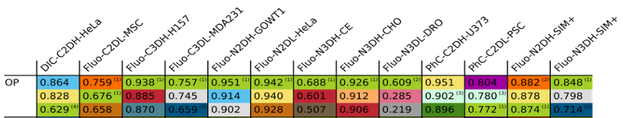

U-Net
A CNN architecture for biomedical image segmentation (and more...)
Based on the work by Olaf Ronneberger, Philipp Fischer and Thomas Brox
Overview
- Semantic segmentation
-
Basics
- Convolutions / Backpropagation / Gradient descent
- Related work
- U-Net architecture
- Results
- Live Demo
Semantic segmentation
Applications from medicine...
→to marketing
 →
→
A quick refresh on the basics
Convolutions
Conv. Layer:
Accepts volume \(5 \times 5 \times 3\)
4 hyperparameters:
Produces volume \(3 \times 3 \times 2\)
Accepts volume \(5 \times 5 \times 3\)
4 hyperparameters:
- # of filter \(K=2\)
- spatial extent \(F=3\)
- stride \(S=2\)
- zero padding \(P=1\)
Produces volume \(3 \times 3 \times 2\)
Softmax function and cross entropy loss
\(\sigma(\mathbf{z})_j = \frac{e^{z_j}}{\sum_{k=1}^K e^{z_k}}\) for \(j = 1, …, K\).
Where \(\mathbf{z}\) is a \(K\)-dimensional real-valued vector.
$$L_i = -log \left(\frac{e^{\sigma_{y_i}}}{\sum_{k=1}^K e^{\sigma_k}}\right)$$
Gradients and backpropagation
Question: What is the gradient of \(f(x,y,z)=(x+y)z\) ?
$$\nabla f(x,y,z) = (z, z, x+y)$$
Gradient descent
# Vanilla Gradient Descent
while True:
weights_grad = evaluate_gradient(loss_fun, data, weights)
# perform parameter update
weights += - step_size * weights_grad
Related work
Sliding window approach to semantic segmentation
U-Net architecture

Data augmentation
Pixel-wise loss maps
Results
ISBI EM stack segmentation challenge




Live Demo
References
- Ciresan, D.C., Gambardella, L.M., Giusti, A., Schmidhuber, J.: Deep neural net- works segment neuronal membranes in electron microscopy images. In: NIPS. pp. 2852–2860 (2012)
- O. Ronneberger and P.Fischer and T. Brox: U-Net: Convolutional Networks for Biomedical Image Segmentation (2015), arXiv:1505.04597 [cs.CV]
- WWW: Web page of Stanfords cs231 class notes, https://cs231n.github.io/
- WWW: Web page EM segmentation challenge, http://brainiac2.mit.edu/isbi_challenge/
- WWW: Web page of cell tracking challenge, http://www.celltrackingchallenge.net/index.html